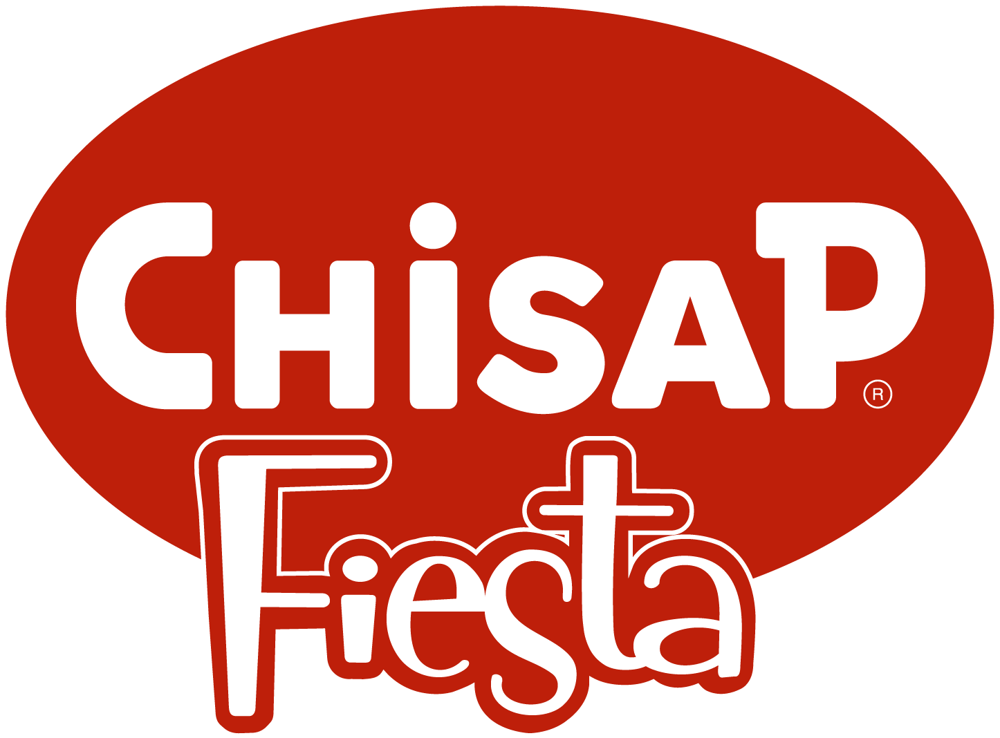

Tres generaciones, 35 sucursales y millones de panchos después, la historia de Chisap la escribieron ustedes. Contanos la tuya: las mejores quedan en el mural del aniversario y todas participan del Sorteo 70 Años.
Sin compromiso · te toma 2 minutos · tus datos no se publican
Hitos ilustrativos de la demo — el contenido final lo valida Chisap.
Cada tarjeta es un recuerdo real de alguien con la marca. Filtrá por década o sumá el tuyo.
¿No sabés por dónde empezar? Tocá una de las ideas y seguila.
Tu historia entra al mural después de una revisión breve del equipo (menos de 48 h).
Sorteo 70 Años: entre todas las historias recibidas sorteamos 70 combos fiesteros y un gran premio aniversario. Una participación por persona. El premio final lo define Chisap — este texto es de la demo.